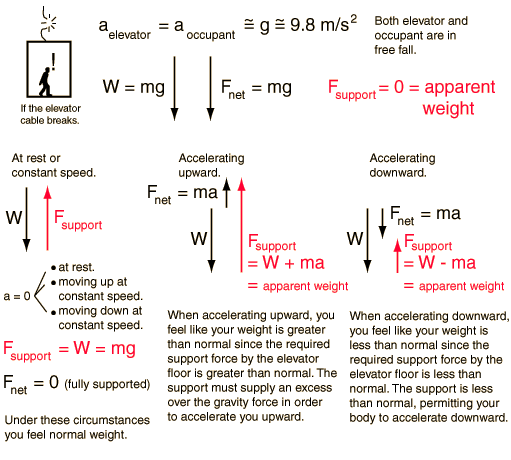

You Feel "Weightless" If the Elevator Cable Breaks

The phenomenon of "weightlessness" occurs when there is no force of support on your body. When your body is effectively in "free fall", accelerating downward at the acceleration of gravity, then you are not being supported. The sensation of apparent weight comes from the support that you feel from the floor, from a chair, etc. Different sensations of apparent weight can occur on an elevator since it is capable of zero or constant speed (zero acceleration) and can accelerate either upward or downward. If the elevator cable breaks then both you and the elevator are in free fall. The resultant experience of weightlessness might be exhilirating if it weren't for the anticipation of the quick stop at the bottom.
|
Index
Newton's laws
Standard mechanics problems |